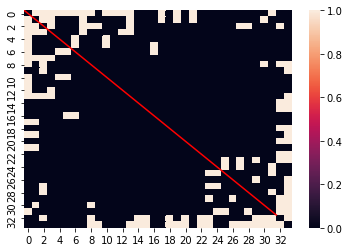
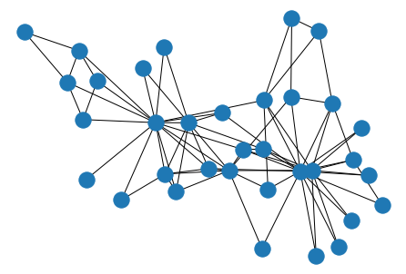

Networkx vs Numpy/Pandas
Under the hood any data that you can represent in a graph, you can also represent as a matrix of values. Therefore, networkx has a ton of great tools for translating between graph thinking and your typical Data Science numpy/pandas fare.
Simple Data
To demonstrate this, we’ll load the canonical dataset representing a group of kids in a karate cohort and measuring if they interacted outside of class at all.
import networkx as nx
G = nx.karate_club_graph()
# ensure the same position
layout = nx.spring_layout(G)
nx.draw(G, pos=layout)
As you can see, there are 34 students, and the 78 edges between them represent relationships that emerged between each pair, outside the context of the course.
display(G.number_of_edges())
display(G.number_of_nodes())78
34
Numpy
As I said above, all graph data can be boiled down to tabular data. In this case, we can represent this network as an adjacency matrix, where we have n rows and n columns (where n is the number of nodes in our network). And is read by looking at the intersection of row m and column n– if the value is 1, there’s an edge in the network, otherwise it’s zero.
To Matrix
Getting to this point is a one-liner in networkx
mat = nx.to_numpy_matrix(G)
print(mat)[[0. 1. 1. ... 1. 0. 0.]
[1. 0. 1. ... 0. 0. 0.]
[1. 1. 0. ... 0. 1. 0.]
...
[1. 0. 0. ... 0. 1. 1.]
[0. 0. 1. ... 1. 0. 1.]
[0. 0. 0. ... 1. 1. 0.]]
As promised, the shape of the matrix is n x n
mat.shape(34, 34)
And if you inspect the number of 1s in the matrix, you might be surprised to see that it’s double what you had expected.
mat.sum()156.0
But if you actually plot out the matrix, it should be clear that the data is symmetric down the middle.
import numpy as np
import seaborn as sns
ax = sns.heatmap(mat)
ax.plot(np.linspace(32, 0), np.linspace(32, 0), 'r');
This is because n=m has a value of 1 at the point (n, m) AS WELL AS (m, n). Therefore, we get the value we might have expected to see by dividing by 2.
mat.sum() / 278.0
From Matrix
Similarly, we can work backwards from an adjacency matrix to a graph with another one-liner.
nx.draw(nx.from_numpy_matrix(mat), pos=layout)Pandas
In general, pandas does a lot of the same work that numpy does, but with greater context, and less emphasis on raw, numeric compute.
To Adjacency
Adjacency matrix and networkx is no different. Here, we get the same underlying values that we did when we piped our data into a numpy format, but with the added context of our node labels as row and column indicies.
df = nx.to_pandas_adjacency(G)
df.head()| 0 | 1 | 2 | 3 | 4 | 5 | 6 | 7 | 8 | 9 | ... | 24 | 25 | 26 | 27 | 28 | 29 | 30 | 31 | 32 | 33 | |
|---|---|---|---|---|---|---|---|---|---|---|---|---|---|---|---|---|---|---|---|---|---|
| 0 | 0.0 | 1.0 | 1.0 | 1.0 | 1.0 | 1.0 | 1.0 | 1.0 | 1.0 | 0.0 | ... | 0.0 | 0.0 | 0.0 | 0.0 | 0.0 | 0.0 | 0.0 | 1.0 | 0.0 | 0.0 |
| 1 | 1.0 | 0.0 | 1.0 | 1.0 | 0.0 | 0.0 | 0.0 | 1.0 | 0.0 | 0.0 | ... | 0.0 | 0.0 | 0.0 | 0.0 | 0.0 | 0.0 | 1.0 | 0.0 | 0.0 | 0.0 |
| 2 | 1.0 | 1.0 | 0.0 | 1.0 | 0.0 | 0.0 | 0.0 | 1.0 | 1.0 | 1.0 | ... | 0.0 | 0.0 | 0.0 | 1.0 | 1.0 | 0.0 | 0.0 | 0.0 | 1.0 | 0.0 |
| 3 | 1.0 | 1.0 | 1.0 | 0.0 | 0.0 | 0.0 | 0.0 | 1.0 | 0.0 | 0.0 | ... | 0.0 | 0.0 | 0.0 | 0.0 | 0.0 | 0.0 | 0.0 | 0.0 | 0.0 | 0.0 |
| 4 | 1.0 | 0.0 | 0.0 | 0.0 | 0.0 | 0.0 | 1.0 | 0.0 | 0.0 | 0.0 | ... | 0.0 | 0.0 | 0.0 | 0.0 | 0.0 | 0.0 | 0.0 | 0.0 | 0.0 | 0.0 |
5 rows × 34 columns
From Adjacency
Same as before, we can construct new graph objects from an adjacency DataFrame, no problem.
nx.draw(nx.from_pandas_adjacency(df), pos=layout)
To Edgelist
One interesting wrinkle to this, however, comes when we decide to transform our network data into a tall, sparse DataFrame representation.
Here, we can build a DataFrame that represents all (from, to) edge pairs in our data, and omits the rest.
nx.to_pandas_edgelist(G)| source | target | |
|---|---|---|
| 0 | 0 | 1 |
| 1 | 0 | 2 |
| 2 | 0 | 3 |
| 3 | 0 | 4 |
| 4 | 0 | 5 |
| ... | ... | ... |
| 73 | 30 | 32 |
| 74 | 30 | 33 |
| 75 | 31 | 32 |
| 76 | 31 | 33 |
| 77 | 32 | 33 |
78 rows × 2 columns
From Edgelist
And in reverse, if we have a DataFrame organized in a similar fashion
import pandas as pd
connected_pairs = []
for col in df.columns:
for row, val in enumerate(df[col]):
if val == 1:
connected_pairs.append((row, col))
pair_df = pd.DataFrame(connected_pairs, columns=['from', 'to'])
pair_df.head()| from | to | |
|---|---|---|
| 0 | 1 | 0 |
| 1 | 2 | 0 |
| 2 | 3 | 0 |
| 3 | 4 | 0 |
| 4 | 5 | 0 |
We can specify which columns represent the source and target node labels, with which to draw the new edges.
F = nx.from_pandas_edgelist(pair_df, source='from', target='to')
nx.draw(F, pos=layout)
Giving us the same Graph representation that we started with.